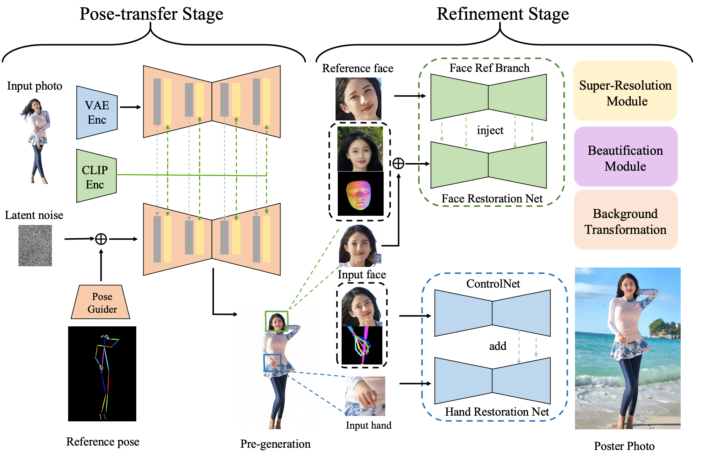
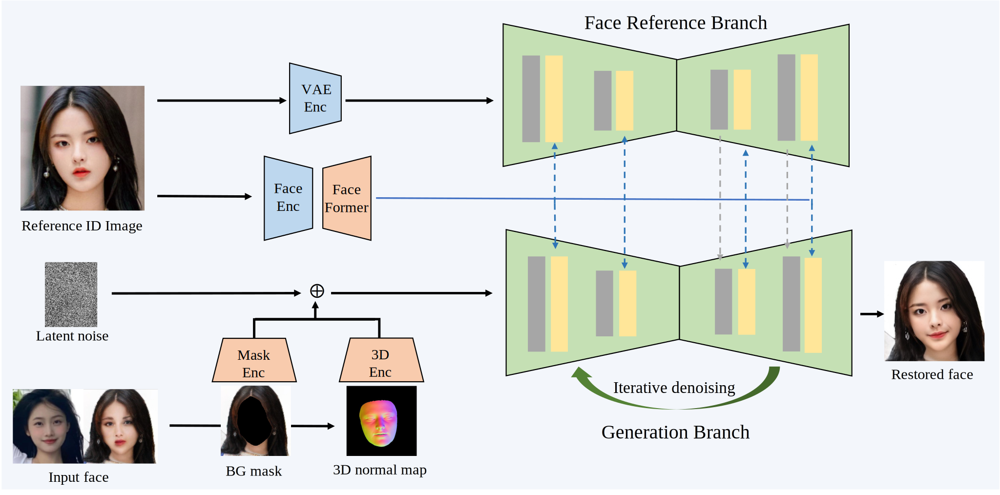
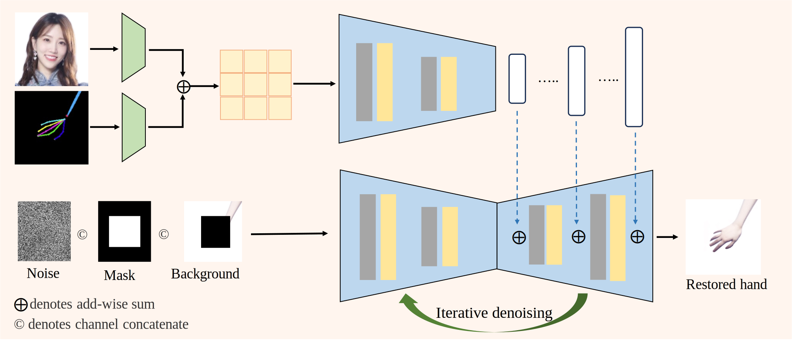

The remarkable success of diffusion models has sparked increasing research interest in pose-driven visual generation. Despite the impressive results achieved by current methods, they still struggle to preserve the fine details of specific body parts, such as the face and hands, which can easily lead to various distortions and breakdowns. To address this limitation, we propose PhotoPoster, a high-fidelity and flexible two-stage pose-driven image generation framework. Our framework consists of a pre-generation stage and a refinement stage. In the pre-generation stage, we generate a rough pose-driven result. In the refinement stage, we employ a human face restoration network and a hand restoration network to correct distorted faces and hands in most images. PhotoPoster achieves good performance in image-level pose-driven generation tasks.
Given a human image and a reference pose, PhotoPoster generates high-fidelity, fine-grained pose-driven images through a two-stage process. In the pose-transfer stage, we employ a reference network and a pose guider to inject the human identity texture into the target pose, following the approach of AnimateAnyone. In the subsequent refinement stage, a customized face restoration network is applied to the pre-generated image, re-aligning facial identity and expression details by incorporating a 3D normal map of the input face. Additionally, a ControlNet inpainting model is applied to restore hand distortions and align the hand shape and skin color with the source input.
Due to the relatively small proportion of the facial area in the original image, the generated facial features are prone to fragmentation and expression distortion. To realign the original facial identity during the pose-transfer phase, a facial refinement stage is implemented following the pose-transfer process. The facial area produced during the pose-transfer phase acts as the input face, with the facial region from the original input images used as a reference for ID and expression restoration.
The face restoration network employs a dual-branch U-Net structure for this purpose. The upper branch features the identity reference U-Net, designed to capture essential identity characteristics from the reference face and introduce them into the lower branch's generation process through an attention mechanism akin to "anymate_anyone". The lower branch of the system encompasses the face restoration U-Net, tasked with reconstructing the facial image from the latent noise input. To ensure accurate face restoration, latent conditions include the background image (excluding the facial region to be restored) and a 3D normal map generated from the original ID reference image and expression image combined. The former provides contextual background information, while the latter conveys intricate facial expression details crucial for the restoration process. These guiding features are extracted by lightweight convolutional feature extractors and integrated into the latent noise prior to iterative denoising. Furthermore, the network incorporates the Face Former module to extract the identity embedding of the reference face, enhancing the preservation of facial identity throughout the restoration process.
Hand generation from a single 2D hand pose is a frequently underappreciated yet crucial aspect of pose-driven portrait generation. The task is rendered challenging by the complexities of articulated motion, self-occlusion, and object interaction. Existing methods often struggle to achieve accurate and fine-grained pose alignment, resulting in unnatural partial distortions and failures. To address this issue, we propose a hand inpainting model that incorporates pose condition control. Specifically, we approach hand restoration as an inpainting task. However, traditional inpainting models based on stable diffusion models typically rely on text-based generation conditions, which lack the spatial specificity required to control hand generation. In contrast, our PhotoPoster model utilizes ControlNet to inject pose control conditions into the hand inpainting process. Furthermore, during inpainting, masking the entire human skin area can cause the model to lose prior information about skin color. To mitigate this, we incorporate facial area information to ensure consistent hand skin color.
We concatenate the noise, mask, and masked images along the channel dimension and feed them into a U-net denoising network with 9 input channels. This part of the input provides background prior information and specifies the location of the inpaint region. To further incorporate hand pose and skin color features into the generation process, we employ two lightweight convolutional layers to extract texture features from the pose and facial images, respectively. These features are then combined and input into a ControlNet network. Notably, the ControlNet network is initialized from a pre-trained 9-channel U-net network. During training, only the parameters of the ControlNet network are updated, while the others remain fixed. The following results demonstrate the effectiveness of our hand inpainting approach.
It is worth noting that, although the refinement stage model can be applied to other pose-driven generation models, it also introduces additional parameters and computational complexity. A remaining challenge is to generate high-quality human hands and faces using a single end-to-end model. We are currently exploring methods for directly generating high-quality human body regions in an end-to-end manner. Through PhotoPoster, we hope to advance the field of human pose-driven generation.